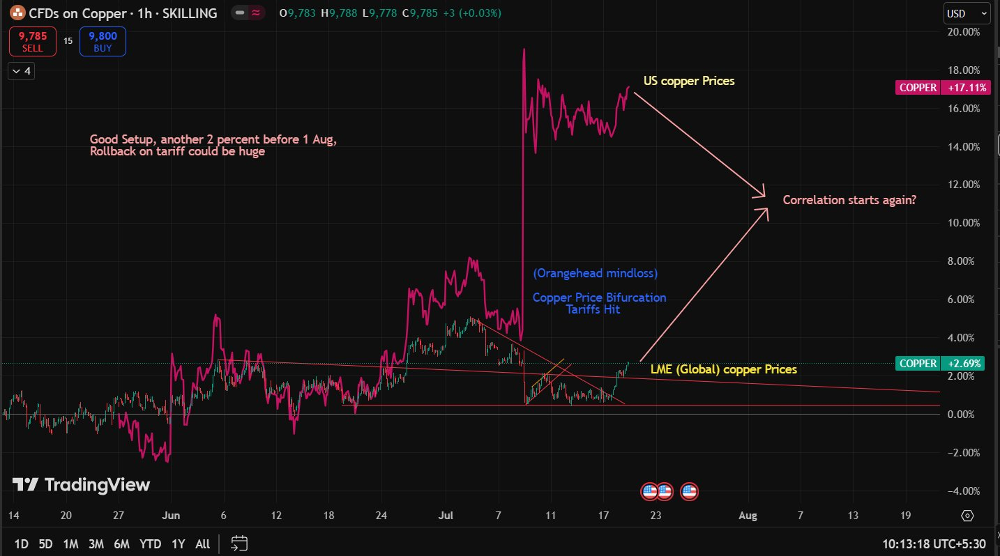

On the eve of 9th July '25, a fascinating anomaly unfolded across global commodity markets.
Copper, a metal quietly embedded in the veins of modern civilization, suddenly fractured across exchanges,
exposing how deeply geopolitics now shapes the flow of industrial capital.
Copper is a rare hybrid in the commodities world; part jewel, part hedge,
and deeply rooted as an industrial metal. Unlike precious metals, it lacks the
cultural allure of a store of wealth, yet it often behaves like a macro hedge,
reflecting global growth expectations and inflationary trends.
At its core, however, copper is an indispensable industrial input, woven into
infrastructure, construction, and the electrification of modern economies.
Its price, therefore, becomes less about sentiment and more about real economic
activity, earning it the nickname “Dr. Copper”
for its ability to diagnose the health of the global economy.
Over the past couple of decades, copper has become inseparable from the electronic
age. Transformers, transducers, RAM modules, EV motors, renewable grids,
semiconductors. Copper quietly powers the infrastructure of modernity.
Unlike gold, which largely stores value, copper actively participates in civilization.
Copper prices largely oscillated between
$2.5 – $4.5 per pound.
Inflation-adjusted valuations suggested the metal was long overdue for a structural
bull run. While it appeared to be moving in tandem with its more glamorous cousins,
gold and silver, a sudden policy shift in the United States abruptly destabilized
the global copper market. The London Metal Exchange (LME), trading copper futures alongside US copper CFDs,
had largely maintained price parity near the
$5 per pound mark.
Then came the tariff announcement.
The policy itself was ambiguous. Markets were uncertain whether tariffs would apply
to raw copper, refined copper, or finished copper products. Traders initially interpreted
the move as bullish for domestic US producers. However, the global reaction evolved very differently.
US copper futures surged on expectations of a tighter domestic supply,
while copper prices on the London Metal Exchange weakened as fears of disrupted
trade flows and excess ex-US supply began dominating sentiment.
For perhaps the first time in decades, copper stopped behaving like a unified global commodity.
Arbitrage traders, who normally synchronize prices across exchanges,
found themselves trapped between widening spreads, logistical uncertainty,
and policy ambiguity.
Copper briefly stopped behaving like a metal
and started behaving like geopolitics.

Divergence between US copper futures and LME copper prices after tariff uncertainty.
Warehousing dynamics shifted rapidly. Shipment schedules were rewritten.
Inventories migrated across continents while speculative positioning amplified volatility.
In effect, copper markets underwent a temporary geographic bifurcation.
The deeper irony lies in copper’s strategic importance. At a time when nations race toward
electrification, renewable infrastructure, AI data centers, electric vehicles,
and grid modernization, copper demand remains structurally irreplaceable.
Every transformer, semiconductor fabrication facility, EV motor,
and transmission network carries copper within its veins.
Unlike oil, whose future remains debated in the context of decarbonization,
copper directly benefits from the energy transition itself.
This is precisely why the tariff shock felt so paradoxical.
A metal essential to industrial expansion was suddenly pulled into the theatre
of protectionist policy and strategic nationalism.
The result was not merely a price spike or crash,
but a reminder that modern commodity markets are no longer governed solely
by supply and demand. They are increasingly shaped by trade fragmentation,
technological competition, industrial security, and geopolitical realignment.
Historically, gold represented fear.
Silver oscillated between monetary nostalgia and industrial relevance.
Copper, in contrast, quietly powered civilization without demanding symbolic status.
Yet perhaps copper is the most honest metal of them all.
When economies build, copper rises.
When manufacturing slows, copper weakens.
When global confidence fractures, copper notices first.
Perhaps that is why “Dr. Copper”
remains one of the most respected nicknames in financial markets.
Not because it predicts the future with mystical precision,
but because it sits at the intersection of energy,
infrastructure, manufacturing, and global trade.
Its price is a living record of how humanity chooses to build.
And on that evening in July 2025,
the doctor looked very ill.